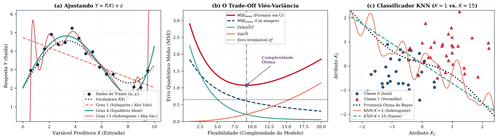
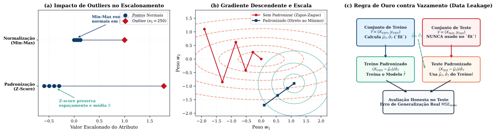
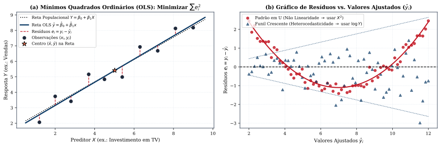
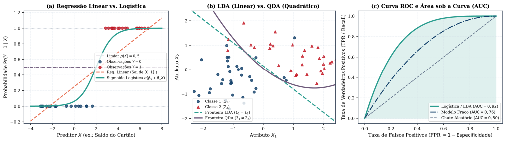
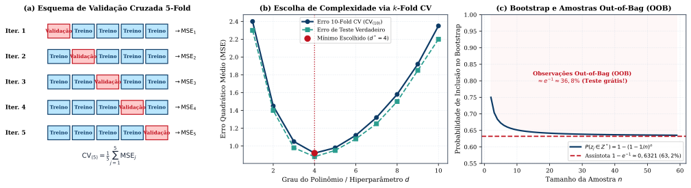
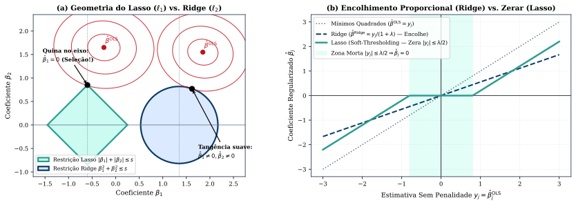
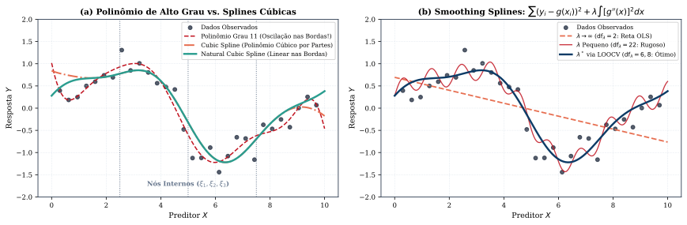
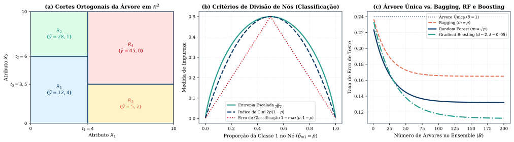
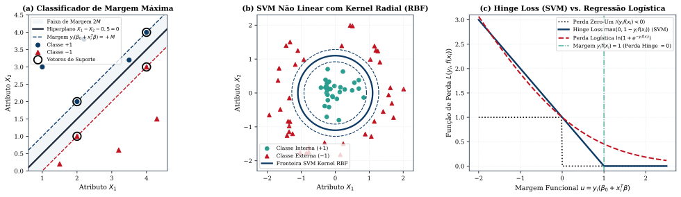
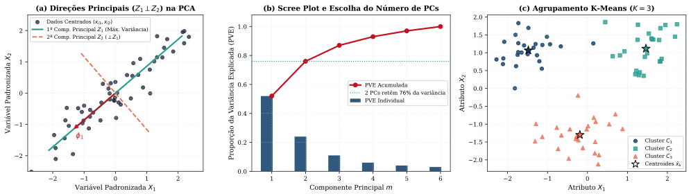

Resumo e Como Estudar por Este Material Este documento foi desenhado para ensinar Machine Learning Clássico do absoluto zero até o domínio matemático e algorítmico completo, sem exigir conhecimento prévio da área e sem misturar tópicos de Deep Learning (redes neurais profundas/CNNs). A espinha dorsal segue fielmente os Capítulos 1 a 9 e 12 de An Introduction to Statistical Learning — with Applications in Python (ISLP, 2023), enriquecida com os fundamentos de engenharia de atributos, otimização e algoritmos clássicos dos Capítulos 1 a 10 de Machine Learning with PyTorch and Scikit-Learn (Raschka et al., 2022) (sempre identificados por [Complemento — Raschka et al., Cap. X]). Em cada seção, seguimos sempre a mesma tríade pedagógica: (1) Intuição do Zero (qual problema real queremos resolver), (2) Dicionário de Símbolos e Fórmulas Rigorosas (o que significa cada letra da equação) e (3) Exemplo Numérico Feito à Mão (como a conta funciona na prática com números reais).
| Seção | Capítulos de Referência | O que Você Vai Aprender (Do Zero ao Rigor) |
|---|---|---|
| 0. O Que é Machine Learning? | ISLP Cap. 1 e Cap. 2; Raschka Cap. 1 | A ideia central $Y = f(X) + \varepsilon$, dicionário completo de símbolos ($n, p, X, Y, \hat{Y}$), Regressão vs. Classificação, Não Supervisionado, Subajuste (Underfitting) vs. Sobreajuste (Overfitting), Decomposição Viés-Variância, Classificador de Bayes e algoritmo KNN passo a passo |
| 1. Preparando os Dados | Raschka Cap. 4 e Cap. 6; ISLP Cap. 2 | Como limpar dados reais: valores faltantes (NaN), variáveis categóricas (One-Hot Encoding), escalonamento (Min-Max vs. Padronização Z-Score) e a regra de ouro contra Vazamento de Dados (Data Leakage) entre treino e teste |
| 2. Regressão Linear | ISLP Cap. 3 (Seções 3.1–3.6); Raschka Cap. 9 | Como prever números contínuos: reta de Mínimos Quadrados Ordinários (OLS) feita à mão, erro-padrão, teste $t$, estatística $F$, métrica $R^2$, variáveis dummy, interações (sinergia) e diagnóstico dos 6 problemas clássicos (resíduos, alavancagem $h_i$, VIF e RANSAC) |
| 3. Classificação | ISLP Cap. 4 (Seções 4.1–4.7); Raschka Cap. 2 e 3 | Como prever categorias: por que a regressão linear falha, Regressão Logística (função sigmoide, odds, logit e máxima verossimilhança), LDA, QDA, Naive Bayes, Matriz de Confusão, Sensibilidade, Especificidade, Curva ROC / AUC, Perceptron e Adaline |
| 4. Validação Cruzada e Bootstrap | ISLP Cap. 5 (Seções 5.1–5.3); Raschka Cap. 6 | Como medir se o modelo realmente aprendeu: divisão Treino/Validação, LOOCV (e a fórmula mágica da alavancagem $h_i$), Validação Cruzada $k$-Fold ($k=5$ ou $10$) e Bootstrap (amostragem com reposição e a origem dos $63{,}2\%$) |
| 5. Seleção de Variáveis e Regularização (Ridge & Lasso) | ISLP Cap. 6 (Seções 6.1–6.5); Raschka Cap. 4 | Como evitar sobreajuste quando há muitas variáveis: Best Subset, Forward/Backward Stepwise, critérios $C_p$, AIC, BIC e $R^2_{\text{adj}}$, Regressão Ridge ($\ell_2$), Lasso ($\ell_1$) (por que o losango zera coeficientes e faz seleção automática de variáveis), PCR e PLS |
| 6. Modelos Não Lineares, Splines e GAMs | ISLP Cap. 7 (Seções 7.1–7.8) | Como capturar curvas suaves sem explodir a variância: Regressão Polinomial, Funções Escada, Splines Cúbicas, Splines Naturais, Smoothing Splines, Regressão Local (LOESS) e Modelos Aditivos Generalizados (GAMs) |
| 7. Árvores de Decisão, Random Forest e Boosting | ISLP Cap. 8 (Seções 8.1–8.3); Raschka Cap. 7 | Modelos baseados em regras de decisão: Árvores de Regressão e Classificação (CART), poda por custo-complexidade, Índice de Gini e Entropia, Bagging (erro Out-of-Bag), Random Forests ($m \approx \sqrt{p}$), Gradient Boosting, AdaBoost e XGBoost |
| 8. Máquinas de Vetores de Suporte (SVM) | ISLP Cap. 9 (Seções 9.1–9.6); Raschka Cap. 3 | Separando classes com a maior margem de segurança possível: Hiperplano de Margem Máxima, Vetores de Suporte, Margem Suave (folgas $\epsilon_i$ e parâmetro $C$), o Truque do Kernel (Kernel Trick) Polinomial e Radial (RBF) e a perda Hinge Loss |
| 9. Aprendizado Não Supervisionado (PCA e Clustering) | ISLP Cap. 12 (Seções 12.1–12.5); Raschka Cap. 5 e 10 | Aprendendo padrões sem rótulos $Y$: Análise de Componentes Principais (PCA) (cargas, escores e proporção de variância explicada PVE), Agrupamento K-Means ($K$-Means++ e silhueta), Agrupamento Hierárquico (dendrogramas) e DBSCAN |
Imagine que você trabalha em uma imobiliária e quer estimar o preço de venda de um apartamento a partir da sua área em $\text{m}^2$, do número de quartos e da distância até o metrô; ou imagine um médico que deseja prever se um paciente tem ou não diabetes a partir da glicemia, do IMC e da idade.
Em Machine Learning (Aprendizado de Máquina) ou Aprendizado Estatístico (Statistical Learning), nós não programamos regras fixas manualmente (como se área > 100 então preço = 500 mil). Em vez disso, fornecemos ao computador uma tabela com exemplos históricos reais (os dados de treinamento) para que um algoritmo descubra automaticamente a relação matemática entre as características de entrada e o resultado de saída.
Para ler qualquer livro ou artigo de Machine Learning sem nunca travar na notação, guarde este Dicionário Fundamental de Símbolos (usado em todo o ISLP):
Antes de escolher um algoritmo, a primeira pergunta é sempre: qual é a natureza da resposta $Y$?
Na Seção 2.1 do ISLP, quando $Y$ é quantitativa, postulamos que a natureza gera os dados segundo a equação mestra:
Vamos entender o que cada peça significa:
Quando treinamos um algoritmo de Machine Learning nos dados, obtemos uma função estimada $\hat{f}(X)$ e fazemos predições $\hat{Y} = \hat{f}(X)$. Por que nossas previsões $\hat{Y}$ nunca acertam $100\%$ de $Y$? A álgebra responde com uma das identidades mais bonitas da área:
Teorema 0.1 (Decomposição em Erro Redutível e Erro Irredutível — ISLP, Seção 2.1.1): Para um preditor $X$ fixado e uma função estimada $\hat{f}$, a média do quadrado do erro de predição $\mathbb{E}\big[(Y - \hat{Y})^2\big]$ separa-se exatamente em duas partes:
$$\mathbb{E}\!\left[(Y - \hat{Y})^2\right] = \underbrace{\big[f(X) - \hat{f}(X)\big]^2}_{\text{Erro Redutível}} + \underbrace{\operatorname{Var}(\varepsilon)}_{\text{Erro Irredutível } (\sigma_\varepsilon^2)}$$
Em problemas de Regressão, medimos a qualidade de um modelo pelo Erro Quadrático Médio (Mean Squared Error — MSE), que é a média dos quadrados das diferenças entre o valor real $y_i$ e o valor previsto $\hat{f}(x_i)$:
A Armadilha Fundamental do Machine Learning: Nunca julgue um modelo pelo seu erro de treinamento ($\operatorname{MSE}_{\text{treino}}$)! Um aluno que decora as respostas da lista de exercícios tira $10$ na lista de casa (treino), mas pode tirar $2$ na prova com questões inéditas (teste). Da mesma forma, se usarmos uma curva extremamente flexível (como um polinômio de grau $13$ passando por todos os pontos na Figura 1a), o $\operatorname{MSE}_{\text{treino}}$ cai para zero, mas nas regiões entre os pontos a curva oscila violentamente para perseguir o ruído $\varepsilon_i$. Esse fenômeno chama-se Sobreajuste (Overfitting).
O que realmente importa é o MSE de Teste em novas observações $(x_0, y_0)$ que não foram usadas para treinar o modelo:
Teorema 0.2 (A Decomposição Viés-Variância do Erro de Teste — Equação 2.7 do ISLP): Para qualquer ponto de teste $x_0$, o MSE de teste esperado (caso pudéssemos repetir o treinamento em diversos bancos de dados sorteados da mesma população) é sempre a soma de três quantidades positivas:
$$\mathbb{E}\!\left[\big(y_0 - \hat{f}(x_0)\big)^2\right] = \underbrace{\operatorname{Var}\!\big(\hat{f}(x_0)\big)}_{\text{Variância}} + \underbrace{\left[\operatorname{Viés}\!\big(\hat{f}(x_0)\big)\right]^2}_{\text{Viés ao Quadrado}} + \underbrace{\operatorname{Var}(\varepsilon)}_{\text{Erro Irredutível}}$$onde: - Viés ($\operatorname{Viés}(\hat{f}(x_0)) = \mathbb{E}[\hat{f}(x_0)] - f(x_0)$): É o erro de aproximação causado por usar um modelo simples demais para um problema complexo (ex.: ajustar uma reta a uma curva senoidal). Alto viés = Subajuste (Underfitting). - Variância ($\operatorname{Var}(\hat{f}(x_0)) = \mathbb{E}\big[(\hat{f}(x_0) - \mathbb{E}[\hat{f}(x_0)])^2\big]$): Mede o quanto a curva $\hat{f}$ muda drasticamente se trocarmos alguns pontos da amostra de treino. Modelos excessivamente flexíveis mudam totalmente de formato a cada nova amostra. Alta variância = Sobreajuste (Overfitting).
Como mostra a Figura 1b, quando aumentamos a flexibilidade do modelo, o Viés$^2$ cai e a Variância sobe. O ponto ótimo de Machine Learning está sempre no fundo do "U" da curva de MSE de teste, onde Viés e Variância se equilibram!
Quando a resposta $y_i$ é uma categoria (ex.: $Y \in \{\text{Azul}, \text{Vermelho}\}$), não faz sentido subtrair $y_i - \hat{y}_i$. Em vez disso, medimos a Taxa de Erro (Error Rate), que é simplesmente a fração (porcentagem) de exemplos em que o modelo previu a classe errada:
O símbolo $\mathbb{I}(\text{condição})$ chama-se função indicadora: vale $1$ quando a condição dentro dos parênteses é verdadeira e $0$ quando é falsa.
Qual seria o melhor classificador possível se conhecêssemos exatamente as probabilidades da natureza? Seria o Classificador de Bayes (Equação 2.10 do ISLP): dado um novo ponto $x_0$, ele calcula a probabilidade condicional de cada classe $j \in \{1, \dots, K\}$ dado $X = x_0$, denotada por $\Pr(Y = j \mid X = x_0)$, e escolhe a classe mais provável:
(Nota: o símbolo $\arg\max_j$ significa "o valor do índice $j$ que torna a expressão máxima"). No caso de $2$ classes ($0$ e $1$), basta prever a classe $1$ se $\Pr(Y = 1 \mid X = x_0) > 0{,}50$ ($50\%$), e a linha onde $\Pr(Y = 1 \mid X = x_0) = 0{,}50$ é a Fronteira de Decisão de Bayes (linha pontilhada preta na Figura 1c). A menor taxa de erro possível na natureza é a Taxa de Erro de Bayes: $1 - \mathbb{E}\!\left[\max_j \Pr(Y = j \mid X)\right]$.
Na vida real, nós não sabemos a fórmula verdadeira de $\Pr(Y = j \mid X = x_0)$. Como estimá-la do jeito mais intuitivo possível? Olhando para os $K$ exemplos de treinamento mais parecidos (mais próximos) com o novo ponto $x_0$!
Dado um número inteiro $K \ge 1$ escolhido por você e um novo ponto $x_0 = (x_{01}, \dots, x_{0p})^T$:
e classifique $x_0$ na classe majoritária entre os $K$ vizinhos!
Como escolher $K$ no KNN? (O Papel de $1/K$ na Flexibilidade): - $K = 1$ (Máxima Flexibilidade $\implies$ Baixo Viés, Altíssima Variância): O algoritmo olha apenas para o único vizinho mais próximo. No treino, a taxa de erro é sempre $0\%$ (pois o vizinho mais próximo de cada ponto de treino é ele mesmo!), mas a fronteira de decisão fica cheia de "ilhas" recortadas ao redor de ruídos (curva laranja na Figura 1c — overfitting). - $K$ Grande, ex.: $K = 15$ ou $50$ (Baixa Flexibilidade $\implies$ Baixa Variância, Alto Viés): Fazemos a média sobre muitos pontos, alisando a fronteira de decisão (curva verde tracejada na Figura 1c). Se $K$ for exageradamente grande, a fronteira fica rígida demais (underfitting).
Vamos resolver juntos um exemplo concreto (baseado no Exercício 2.4.7 do ISLP): temos uma tabela de treino com $n = 4$ pacientes, $p = 2$ exames ($X_1$ e $X_2$) e o diagnóstico $Y \in \{\text{Saudável}, \text{Doente}\}$:
Chega um novo paciente $x_0 = (0, 0)$. Qual é o diagnóstico previsto pelo KNN com $K = 1$ e com $K = 3$?

Figura 1 — (a) Ajuste polinomial de graus 1 (subajuste/alto viés), 4 (equilíbrio ideal) e 13 (sobreajuste/alta variância) sobre dados gerados por $Y = f(X) + \varepsilon$. (b) Decomposição do MSE de teste em $\text{Viés}^2$, Variância e Erro Irredutível $\sigma_\varepsilon^2$ (Equação 2.7 do ISLP). (c) Classificador KNN com $K=1$ versus $K=15$ comparado à Fronteira de Bayes (Seção 2.2.3 do ISLP).
[Complemento — Raschka et al., ML with PyTorch and Scikit-Learn, Cap. 4, Seções 4.1–4.4 e Cap. 6]: Antes de aplicar KNN, Regressão Linear, Regressão Logística, SVM ou PCA em problemas reais, os dados brutos quase sempre precisam passar por três etapas obrigatórias de pré-processamento: tratamento de dados ausentes, codificação de textos/categorias em números e escalonamento de variáveis.
NaN) e Variáveis Categóricas (Seções 4.1 e 4.2 de Raschka)NaN ou NULL). Se simplesmente apagarmos todas as linhas com algum dado faltante, podemos perder grande parte da amostra; se apagarmos colunas inteiras, podemos perder variáveis importantes. A solução padrão é a Imputação (Imputation): substituir o valor ausente na coluna $j$ pela média (ou pela mediana, se houver valores extremos) dos valores observados naquela coluna (no conjunto de treinamento!), ou pela moda (valor mais frequente) se a coluna for categórica."P", "M", "G" ou "Azul", "Verde", "Vermelho".Cor $\in \{\text{Azul}, \text{Verde}, \text{Vermelho}\}$. Se codificássemos $\text{Azul}=1, \text{Verde}=2, \text{Vermelho}=3$, o algoritmo acharia erroneamente que "Vermelho" é maior que "Verde" e que a média entre Azul e Vermelho é Verde! A solução correta é criar Variáveis Indicadoras (Dummy Variables / One-Hot Encoding, ISLP Seção 3.3.1): criamos colunas binárias $\{0, 1\}$. Para uma variável com $L$ categorias, usamos $L - 1$ colunas binárias (descartando $1$ categoria como referência/baseline para evitar redundância matemática perfeita com o intercepto $\beta_0$, pois se não é Azul nem Verde, obrigatoriamente é Vermelho):Por que precisamos colocar todas as variáveis na mesma escala? Pense no algoritmo KNN tentando prever se uma pessoa vai comprar um carro usando duas variáveis: $X_1 = \text{Idade (em anos, de } 20 \text{ a } 70)$ e $X_2 = \text{Salário Anual (em reais, de } 30.000 \text{ a } 200.000)$. Quando calculamos a distância euclidiana:
a diferença de salário ($900$ milhões!) engole completamente a diferença de idade ($400$). O KNN vai ignorar a idade apenas porque o salário foi medido em reais e não em centenas de milhares de reais! O mesmo problema afeta o Gradiente Descendente, a Regressão Ridge/Lasso, as SVMs e a PCA.
Existem duas técnicas clássicas para colocar todas as colunas $j = 1, \dots, p$ em escalas comparáveis:
Regra de Ouro (Raschka Cap. 4 e Cap. 6): Ao dividir seus dados em Conjunto de Treino ($\mathcal{T}$) e Conjunto de Teste ($\mathcal{V}$), a média $\bar{x}_{\mathcal{T}}$ e o desvio-padrão $s_{\mathcal{T}}$ (assim como qualquer imputação de dados faltantes ou seleção de variáveis) devem ser calculados EXCLUSIVAMENTE usando os dados de treino $\mathcal{T}$! Quando for avaliar o modelo nos dados de teste $\mathcal{V}$, você deve padronizar o teste usando a média e o desvio-padrão que vieram do treino:
$$x_{\text{treino}}^{\text{std}} = \frac{x_{\text{treino}} - \bar{x}_{\mathcal{T}}}{s_{\mathcal{T}}}, \qquad x_{\text{teste}}^{\text{std}} = \frac{x_{\text{teste}} - \bar{x}_{\mathcal{T}}}{s_{\mathcal{T}}}$$Usar dados do teste para calcular $\bar{x}$ ou $s$ antes de separar os conjuntos chama-se Vazamento de Dados (Data Leakage), pois faz informações do futuro "vazarem" para o treinamento e invalida a avaliação.
Suponha que no conjunto de treino temos $n = 3$ salários (em mil R\$): $x_{\text{treino}} = \{10, 20, 30\}$, e no conjunto de teste chega um novo cliente com salário $x_{\text{teste}} = 40$. Como padronizar ambos?

Figura 2 — (a) Comparação entre Normalização Min-Max e Padronização Z-Score na presença de um outlier ($x_5 = 250$). (b) Trajetória do Gradiente Descendente sem padronização (elipses alongadas e zigue-zague) versus com padronização (círculos concêntricos e convergência direta). (c) Fluxo correto de pré-processamento sem Data Leakage (Raschka Cap. 4 e Cap. 6).
Comecemos pelo modelo supervisionado mais fundamental da história da ciência: prever uma resposta numérica $Y$ (ex.: Vendas de um produto) usando uma única variável preditora $X$ (ex.: Investimento em TV) por meio de uma equação de reta:
Como não conhecemos os verdadeiros $\beta_0$ e $\beta_1$ da natureza, usamos as $n$ observações da nossa amostra $\{(x_1, y_1), \dots, (x_n, y_n)\}$ para encontrar estimativas $\hat{\beta}_0$ e $\hat{\beta}_1$, traçando a reta ajustada:
Para cada ponto $i$, a distância vertical entre o ponto real $y_i$ e a nossa reta $\hat{y}_i$ é o resíduo $e_i = y_i - \hat{y}_i$ (segmentos vermelhos tracejados na Figura 3a). Qual é a "melhor" reta possível? O método dos Mínimos Quadrados Ordinários (MQO / Ordinary Least Squares — OLS) escolhe $\hat{\beta}_0$ e $\hat{\beta}_1$ que tornam a Soma dos Quadrados dos Resíduos (Residual Sum of Squares — RSS) a menor possível:
Teorema 2.1 (Fórmulas dos Estimadores de Mínimos Quadrados — Equação 3.4 do ISLP): Derivando $\operatorname{RSS}(\beta_0, \beta_1)$ em relação a $\beta_0$ e $\beta_1$ e igualando ambas as derivadas a zero (como fizemos no Cálculo 1!), encontramos a única solução ótima:
$$\hat{\beta}_1 = \frac{\sum_{i=1}^{n} (x_i - \bar{x})(y_i - \bar{y})}{\sum_{i=1}^{n} (x_i - \bar{x})^2}, \qquad \hat{\beta}_0 = \bar{y} - \hat{\beta}_1 \bar{x}$$onde $\bar{x} = \frac{1}{n}\sum_{i=1}^n x_i$ e $\bar{y} = \frac{1}{n}\sum_{i=1}^n y_i$ são as médias de $X$ e $Y$. Em particular, toda reta de mínimos quadrados passa obrigatoriamente pelo ponto médio $(\bar{x}, \bar{y})$ dos dados (pois $\hat{\beta}_0 + \hat{\beta}_1\bar{x} = \bar{y}$)!
Vamos ajustar uma reta de regressão linear do zero com $n = 4$ lojas, onde $X$ é o gasto em anúncios (em mil R\$) e $Y$ é a receita mensal (em mil R\$):
| Loja $i$ | $x_i$ | $y_i$ | $x_i - \bar{x}$ | $y_i - \bar{y}$ | $(x_i - \bar{x})(y_i - \bar{y})$ | $(x_i - \bar{x})^2$ | Predição $\hat{y}_i$ | Resíduo $e_i = y_i - \hat{y}_i$ |
|---|---|---|---|---|---|---|---|---|
| 1 | $1$ | $2$ | $-1{,}5$ | $-2{,}0$ | $+3{,}0$ | $2{,}25$ | $1{,}9$ | $+0{,}1$ |
| 2 | $2$ | $3$ | $-0{,}5$ | $-1{,}0$ | $+0{,}5$ | $0{,}25$ | $3{,}3$ | $-0{,}3$ |
| 3 | $3$ | $5$ | $+0{,}5$ | $+1{,}0$ | $+0{,}5$ | $0{,}25$ | $4{,}7$ | $+0{,}3$ |
| 4 | $4$ | $6$ | $+1{,}5$ | $+2{,}0$ | $+3{,}0$ | $2{,}25$ | $6{,}1$ | $-0{,}1$ |
| Soma | $10$ | $16$ | $0{,}0$ | $0{,}0$ | $\mathbf{7{,}0}$ | $\mathbf{5{,}00}$ | $16{,}0$ | $0{,}0$ |
Portanto, nossa equação da reta ajustada é $\hat{Y} = 0{,}5 + 1{,}4\,X$! Se uma 5ª loja investir $X = 5$ mil reais, prevemos uma receita de $\hat{Y} = 0{,}5 + 1{,}4(5) = \mathbf{7{,}5\text{ mil reais}}$.
Depois de encontrar $\hat{\beta}_1 = 1{,}4$, surge uma pergunta crucial: será que $X$ realmente afeta $Y$ na realidade ($\beta_1 \neq 0$), ou esse $1{,}4$ apareceu apenas por coincidência num sorteio pequeno de $4$ lojas?
Como a variância verdadeira do ruído $\sigma^2 = \operatorname{Var}(\varepsilon)$ é desconhecida, nós a estimamos pelo Erro Padrão Residual (Residual Standard Error — RSE) (Equação 3.15):
(Dividimos por $n - 2$ porque já gastamos $2$ graus de liberdade para estimar $\hat{\beta}_0$ e $\hat{\beta}_1$). Com o erro-padrão, construímos o Intervalo de Confiança de $95\%$ para a inclinação verdadeira: $\hat{\beta}_1 \pm 2\cdot\operatorname{SE}(\hat{\beta}_1)$ (ou usando o valor crítico exato $t_{n-2;\,0,975}$ da distribuição $t$ de Student).
Se $|t|$ for grande (tipicamente $|t| > 2$), o $p$-valor (a probabilidade de observar um $|t|$ tão grande por puro acaso se $\beta_1$ fosse $0$) será muito pequeno ($p\text{-valor} < 0{,}05$ ou $< 0{,}01$), e rejeitamos $H_0$, concluindo que $X$ tem efeito estatisticamente significativo sobre $Y$!
Quando temos $p$ variáveis preditoras simultâneas ($X_1 = \text{TV}$, $X_2 = \text{Rádio}$, $X_3 = \text{Jornal}$), ajustamos um hiperplano:
Para testar se o modelo como um todo é inútil ($H_0: \beta_1 = \beta_2 = \dots = \beta_p = 0$) contra a alternativa $H_a:$ pelo menos uma variável importa, calculamos a estatística $F$ (Equação 3.23 do ISLP):
No modelo padrão $Y = \beta_0 + \beta_1 X_1 + \beta_2 X_2$, o efeito de investir em TV ($X_1$) é sempre $\beta_1$, independentemente de quanto investimos em Rádio ($X_2$). Mas e se anunciar no Rádio aumentar a eficiência dos anúncios de TV (sinergia)? Basta adicionar o termo de interação (produto) $X_1 \cdot X_2$:
Princípio Hierárquico (ISLP, Seção 3.3.2): Sempre que você incluir uma interação $X_1 \cdot X_2$ (ou uma potência $X^2, X^3$) no modelo, mantenha obrigatoriamente os efeitos principais $X_1$ e $X_2$ no modelo, mesmo que os $p$-valores individuais de $\hat{\beta}_1$ ou $\hat{\beta}_2$ não sejam pequenos!
Sempre que ajustar uma regressão linear, faça o Gráfico de Resíduos ($e_i = y_i - \hat{y}_i$) versus Valores Ajustados ($\hat{y}_i$) e verifique:
Um ponto muito afastado de $\bar{x}$ ($h_i \gg \frac{p+1}{n}$) "puxa" a reta inteira na direção dele!
Limite do Cartão e Score de Crédito), o modelo não consegue separar a contribuição de cada uma, explodindo a variância $\operatorname{Var}(\hat{\beta}_j)$. Detectamos isso pelo VIF (Variance Inflation Factor, Equação 3.28):onde $R^2_{X_j \mid X_{-j}}$ é o $R^2$ da regressão da variável $X_j$ contra todas as outras variáveis de entrada. Um $\operatorname{VIF} > 5$ ou $10$ indica multicolinearidade severa (solução: remover uma das variáveis redundantes ou usar Regressão Ridge).

Figura 3 — (a) Reta de Mínimos Quadrados Ordinários $\hat{y} = \hat{\beta}_0 + \hat{\beta}_1 x$ passando pelo centro $(\bar{x}, \bar{y})$ e minimizando a soma dos quadrados dos resíduos verticais $e_i$ (Seção 3.1). (b) Gráfico de resíduos $e_i$ versus valores ajustados $\hat{y}_i$ revelando não linearidade (curva em U) e heterocedasticidade (funil) (Seção 3.3.3).
Suponha que queremos prever se um cliente vai atrasar a fatura do cartão de crédito ($Y = 1$: Sim / Inadimplente; $Y = 0$: Não / Adimplente) a partir do saldo devedor $X$. Se ajustarmos uma reta de regressão linear $p(X) = \beta_0 + \beta_1 X$ aos zeros e uns (linha laranja tracejada na Figura 4a), acontecem dois absurdos: para saldos muito baixos a reta prevê probabilidades negativas ($p(X) < 0$), e para saldos muito altos prevê probabilidades maiores que $100\%$ ($p(X) > 1$)!
Como transformar qualquer resultado da reta $\eta = \beta_0 + \beta_1 X \in (-\infty, +\infty)$ em uma probabilidade válida que fique sempre presa dentro do intervalo $(0, 1)$? A Regressão Logística passa a combinação linear por dentro da Função Logística (ou Sigmoide) $\sigma(z) = \frac{e^z}{1 + e^z} = \frac{1}{1 + e^{-z}}$, que tem formato de "S" suave (curva verde na Figura 4a):
Definição 3.1 (O Modelo de Regressão Logística, Chance e Logit — Equações 4.2 a 4.7 do ISLP): A probabilidade condicional de pertencer à classe positiva ($Y = 1$) dados os preditores $X = (X_1, \dots, X_p)$ é modelada por:
$$p(X) = \Pr(Y = 1 \mid X) = \frac{e^{\beta_0 + \beta_1 X_1 + \dots + \beta_p X_p}}{1 + e^{\beta_0 + \beta_1 X_1 + \dots + \beta_p X_p}} = \frac{1}{1 + e^{-(\beta_0 + \beta_1 X_1 + \dots + \beta_p X_p)}}$$Dividindo $p(X)$ pela probabilidade complementar $1 - p(X) = \frac{1}{1 + e^{\beta_0 + \dots + \beta_p X_p}}$ e tomando o logaritmo natural $\ln$, obtemos duas interpretações fundamentais: 1. Chance (Odds): $\quad \dfrac{p(X)}{1 - p(X)} = e^{\beta_0 + \beta_1 X_1 + \dots + \beta_p X_p} \in (0, +\infty)$ (Ex.: se $p(X) = 0{,}80$, a chance é $\frac{0,80}{0,20} = 4$, ou seja, "$4$ para $1$" a favor do evento ocorrer). 2. Log-Odds (Logit): $\quad \ln\!\left(\dfrac{p(X)}{1 - p(X)}\right) = \beta_0 + \beta_1 X_1 + \dots + \beta_p X_p$ O logaritmo da chance é perfeitamente linear em $X$! Aumentar $X_j$ em $1$ unidade soma $\beta_j$ ao log-odds (ou seja, multiplica a chance por $e^{\beta_j}$).
Na Regressão Logística, em vez de mínimos quadrados, usamos o método da Máxima Verossimilhança (Maximum Likelihood, Seção 4.3.2): buscamos os pesos $\beta$ que atribuem a maior probabilidade conjunta $\ell(\beta)$ aos dados que realmente aconteceram (queremos $p(x_i)$ perto de $1$ quando $y_i = 1$, e $1 - p(x_i)$ perto de $1$ quando $y_i = 0$):
Maximizar esse produto equivale a minimizar o negativo do seu logaritmo, que é a famosa função de perda Entropia Cruzada Binária (Log-Loss) (Raschka Cap. 3):
Um modelo logístico prevê a probabilidade de um aluno passar com nota máxima ($Y=1$) a partir das horas de estudo semanais ($X$), com coeficientes estimados $\hat{\beta}_0 = -6$ e $\hat{\beta}_1 = 0{,}15$.
[Complemento — Perceptron e Adaline: A Origem Histórica dos Classificadores Lineares (Raschka Cap. 2)]: Nos Capítulos 2 e 3, Raschka mostra como a Regressão Logística nasceu da evolução de dois algoritmos clássicos: - Perceptron (Rosenblatt, 1957): Calcula a combinação linear $z_i = w^T x_i + b$ e aplica um degrau brusco ($\hat{y}_i = 1$ se $z_i \ge 0$ e $0$ se $z_i < 0$), atualizando os pesos por $\Delta w_j = \eta(y_i - \hat{y}_i)x_{ij}$ apenas quando erra. Defeito: se as duas classes tiverem qualquer sobreposição (não forem perfeitamente separáveis por uma reta), o Perceptron nunca converge! - Adaline (Widrow & Hoff, 1960): Troca o degrau brusco pela saída contínua $z_i = w^T x_i + b$ durante o treinamento para minimizar $\frac{1}{2n}\sum (y_i - z_i)^2$ por Gradiente Descendente. Quando trocamos a saída linear do Adaline pela sigmoide $\sigma(z_i)$ e a perda quadrática pela perda logística $L(\beta)$, obtemos exatamente a Regressão Logística!
Enquanto a Regressão Logística modela diretamente $\Pr(Y = k \mid X = x)$ (abordagem discriminativa), os Modelos Generativos fazem o caminho inverso usando o Teorema de Bayes (Equação 4.15 do ISLP):
Dependendo da suposição que fazemos sobre a densidade $f_k(x)$, nascem os três grandes classificadores generativos:
| Classificador Generativo | Hipótese sobre $f_k(x) = \Pr(X = x \mid Y = k)$ | Formato da Função Discriminante $\delta_k(x)$ e da Fronteira | Quando Usar? | ||
|---|---|---|---|---|---|
| 1. LDA (Linear Discriminant Analysis, Seção 4.4.1–4.4.2) | $X$ dentro de cada classe $k$ segue uma Normal $\mathcal{N}(\mu_k, \Sigma)$ com a mesma matriz de covariância $\Sigma$ em todas as classes (homocedasticidade) | Linear em $x$: $\delta_k(x) = x^T\Sigma^{-1}\mu_k - \frac{1}{2}\mu_k^T\Sigma^{-1}\mu_k + \ln\pi_k$ (para $p=1$: $\delta_k(x) = x\frac{\mu_k}{\sigma^2} - \frac{\mu_k^2}{2\sigma^2} + \ln\pi_k$). Fronteira é uma reta/hiperplano (Figura 4b) | Quando as classes são bem separadas (onde a Logística fica instável), $K \ge 2$ classes, ou $n$ é pequeno e a variância entre classes é parecida | ||
| 2. QDA (Quadratic Discriminant Analysis, Seção 4.4.3) | $X$ em cada classe $k$ segue uma Normal $\mathcal{N}(\mu_k, \Sigma_k)$, mas cada classe tem sua própria matriz de covariância $\Sigma_k$ | Quadrática em $x$: $\delta_k(x) = -\frac{1}{2}(x-\mu_k)^T\Sigma_k^{-1}(x-\mu_k) - \frac{1}{2}\ln | \Sigma_k | + \ln\pi_k$. Fronteira é curva/parabólica (Figura 4b) | Quando o formato/espalhamento das nuvens de pontos muda muito de uma classe para outra ($\Sigma_1 \neq \Sigma_2$) e $n$ é grande o suficiente para estimar cada $\Sigma_k$ |
| 3. Naive Bayes (Bayes Ingênuo, Seção 4.4.4) | Assume que, dentro de cada classe $k$, os $p$ atributos são independentes entre si: $f_k(x) = f_{k1}(x_1)\times f_{k2}(x_2)\times\dots\times f_{kp}(x_p)$ | Soma de funções univariadas: $\ln\pi_k + \sum_{j=1}^p \ln f_{kj}(x_j)$ (não precisa estimar covariâncias cruzadas!) | Excelente quando $p$ é muito grande (ex.: classificação de textos/filtro de spam com milhares de palavras) ou $n$ é pequeno, pois evita estimar matrizes $p \times p$ |
Em problemas reais com classes desbalanceadas (por exemplo, apenas $1\%$ dos clientes são fraudadores e $99\%$ são honestos), medir apenas a Acurácia Global é perigoso: um modelo preguiçoso que chuta "Todo mundo é honesto" acerta $99\%$ das vezes, mas deixa passar $100\%$ das fraudes!
Por isso, desmembramos os acertos e erros na Matriz de Confusão (convencionando $Y=1$ como Positivo e $Y=0$ como Negativo):
A partir desses 4 números definimos as métricas essenciais (Tabela 4.7 do ISLP e Raschka Cap. 6):

Figura 4 — (a) Regressão Linear extrapolando $[0,1]$ versus a função Sigmoide da Regressão Logística (Seção 4.3). (b) Fronteira de decisão linear do LDA ($\Sigma_1 = \Sigma_2$) versus fronteira curva do QDA ($\Sigma_1 \neq \Sigma_2$) (Seção 4.4). (c) Curva ROC e área sob a curva (AUC) (Seção 4.4.2).
Na vida real, raramente temos um segundo banco de dados gigante esperando para servir de teste. Temos apenas as nossas $n$ observações! Como usar essas mesmas $n$ observações tanto para treinar o modelo quanto para estimar honestamente seu erro de teste (e escolher o melhor grau de polinômio, o melhor $K$ do KNN ou o melhor $\lambda$ da regularização)?
Existem três estratégias de Validação Cruzada (Cross-Validation):
O Atalho Mágico do LOOCV na Regressão Linear/Polinomial (Equação 5.2 do ISLP): Normalmente, o LOOCV exige treinar o modelo $n$ vezes. Porém, para qualquer modelo ajustado por Mínimos Quadrados (OLS), vale a identidade algébrica exata:
$$\operatorname{CV}_{(n)} = \frac{1}{n}\sum_{i=1}^{n} \left(\frac{y_i - \hat{y}_i}{1 - h_i}\right)^2$$onde $\hat{y}_i$ é a previsão de um único ajuste feito nos $n$ pontos completos e $h_i \in [1/n, 1)$ é a alavancagem da observação $i$! Ou seja, calculamos o LOOCV instantaneamente com custo de 1 único treino!
Suponha que você calculou uma estatística qualquer na sua amostra (por exemplo, a mediana dos salários, os coeficientes de um modelo não linear ou a fração ótima $\hat{\alpha}$ de investimento entre duas ações) e quer descobrir qual é o erro-padrão (a incerteza) dessa estimativa, sem ter fórmulas prontas e sem poder coletar novas amostras no mundo real.
O Bootstrap (proposto por Bradley Efron em 1979) resolve isso tratando a própria amostra original $Z = \{z_1, \dots, z_n\}$ como uma "mini-população":
Teorema 4.1 (Quantas observações entram em cada amostra de Bootstrap? — Ex. 5.4.2 do ISLP e Figura 5c): Em cada um dos $n$ sorteios com reposição, a probabilidade de NÃO sortear uma observação específica $z_j$ é $1 - \frac{1}{n}$. Como os $n$ sorteios são independentes, a probabilidade de $z_j$ ficar totalmente de fora da amostra de Bootstrap é $\left(1 - \frac{1}{n}\right)^n \xrightarrow{n \to \infty} e^{-1} \approx 0{,}3679$ ($36{,}8\%$). Logo, a probabilidade de $z_j$ estar presente na amostra de Bootstrap é:
$$\Pr(z_j \in Z^*) = 1 - \left(1 - \frac{1}{n}\right)^n \xrightarrow{n \to \infty} 1 - e^{-1} \approx \mathbf{0{,}6321 \;\; (63{,}2\%)}$$Ou seja, cada amostra de Bootstrap contém cerca de $63{,}2\%$ das observações originais distintas, deixando $36{,}8\%$ de fora — chamadas de observações Out-of-Bag (OOB), que usaremos como conjunto de teste gratuito no Bagging e nas Random Forests (Seção 7)!

Figura 5 — (a) Esquema visual da Validação Cruzada $5$-Fold (em cada iteração, 1 bloco é validação e 4 são treino). (b) Uso da curva de erro de Validação Cruzada para escolher o grau polinomial ótimo $d^* = 4$. (c) Probabilidade de inclusão $1 - (1 - 1/n)^n \to 0{,}6321$ no Bootstrap e fração Out-of-Bag ($36{,}8\%$) (ISLP Cap. 5).
Imagine que você tem um banco de dados com $p = 50$ variáveis preditoras (ou até $p > n$, quando há mais colunas de atributos do que linhas de pacientes!). Se você jogar todas as $50$ variáveis na Regressão Linear comum (OLS), acontecem dois problemas graves:
O Capítulo 6 do ISLP apresenta três caminhos para resolver isso:
Não podemos escolher o modelo pelo menor $\operatorname{RSS}$ de treino nem pelo maior $R^2$, pois eles sempre melhoram quando adicionamos mais variáveis! Precisamos ou usar Validação Cruzada ou somar ao $\operatorname{RSS}$ de treino uma multa (penalidade) proporcional ao número de variáveis $d$ usadas no modelo (Equações 6.2 a 6.5 do ISLP):
| Critério | Fórmula Matemática ($d = \text{nº de variáveis}$, $\hat{\sigma}^2 = \text{variância do erro}$) | Regra de Escolha e Característica |
|---|---|---|
| $C_p$ de Mallows | $C_p = \dfrac{1}{n}\big(\operatorname{RSS} + 2\,d\,\hat{\sigma}^2\big)$ | Menor é melhor. Soma uma multa de $2d\hat{\sigma}^2$ ao RSS para descontar o otimismo do treino. |
| AIC (Akaike) | $\operatorname{AIC} = \dfrac{1}{n}\big(\operatorname{RSS} + 2\,d\,\hat{\sigma}^2\big)$ (proporcional a $C_p$ no modelo linear normal) | Menor é melhor. Baseado em máxima verossimilhança; aplica-se também a modelos logísticos. |
| BIC (Bayesiano) | $\operatorname{BIC} = \dfrac{1}{n}\big(\operatorname{RSS} + \ln(n)\,d\,\hat{\sigma}^2\big)$ | Menor é melhor. Troca o fator $2$ por $\ln(n)$ (como $\ln(n) > 2$ para $n > 7$, penaliza modelos grandes mais fortemente que o $C_p$/AIC, escolhendo modelos mais enxutos). |
| $R^2$ Ajustado ($R^2_{\text{adj}}$) | $R^2_{\text{adj}} = 1 - \dfrac{\operatorname{RSS} / (n - d - 1)}{\operatorname{TSS} / (n - 1)}$ | Maior é melhor. Só aumenta se a nova variável reduzir $\frac{\operatorname{RSS}}{n - d - 1}$ mais do que seria esperado por puro ruído! |
Em vez de escolher variáveis no "tudo ou nada" (entra ou sai), os métodos de regularização minimizam o $\operatorname{RSS}$ somado a uma multa pelo tamanho dos coeficientes $\beta_1, \dots, \beta_p$, controlada por um hiperparâmetro de sintonia $\lambda \ge 0$ (tuning parameter, escolhido por Validação Cruzada):
O Lasso (Least Absolute Shrinkage and Selection Operator) faz uma única mudança na fórmula: troca o quadrado $\beta_j^2$ pelo módulo (valor absoluto) $|\beta_j|$:
Na Seção 6.2.2 (Equações 6.8 e 6.9), mostra-se que minimizar $\operatorname{RSS} + \lambda\sum |\beta_j|$ equivale a minimizar o $\operatorname{RSS}$ sujeito a um "orçamento máximo" $s$:
Olhe para a Figura 6a: as curvas vermelhas são as curvas de nível de mesmo $\operatorname{RSS}$ ao redor da solução sem restrição $\hat{\beta}^{\text{OLS}}$.
Se as colunas forem ortonormais e $y_j$ for a estimativa OLS sem penalidade da variável $j$, as fórmulas exatas do Ridge e do Lasso ficam:
Conta numérica rápida: Suponha que temos $3$ variáveis com estimativas originais $y_1 = 4{,}0$, $y_2 = -2{,}5$ e $y_3 = 0{,}6$, e escolhemos $\lambda = 2{,}0$ (logo $\lambda / 2 = 1{,}0$):
Outra forma de controlar a variância em alta dimensão é construir $M < p$ novas variáveis $Z_1, \dots, Z_M$ (combinações lineares $Z_m = \sum_{j=1}^p \phi_{jm} X_j$) e ajustar uma regressão linear comum de $Y$ sobre $Z_1, \dots, Z_M$:

Figura 6 — (a) Geometria da restrição $\ell_1$ do Lasso (losango com quinas nos eixos, gerando $\hat{\beta}_1 = 0$) comparada à restrição $\ell_2$ do Ridge (círculo suave) (Figura 6.7 do ISLP). (b) Comparação entre OLS, encolhimento proporcional do Ridge e limiarização suave (Soft-Thresholding) do Lasso (Equações 6.14 e 6.15 do ISLP).
Até aqui, assumimos que a relação entre $X$ e $Y$ (ou o logit) era uma reta. E quando os dados fazem curvas claras? A ideia brilhante do Capítulo 7 do ISLP é substituir $X$ por funções de base transformadas $b_1(X), b_2(X), \dots, b_K(X)$:
Como as funções $b_k(x_i)$ são calculadas diretamente a partir de $x_i$, o modelo continua sendo linear nos parâmetros $\beta_0, \dots, \beta_K$! Ou seja, podemos ajustá-lo por Mínimos Quadrados Ordinários como uma regressão múltipla comum! Vejamos a evolução das escolhas de base:
Como juntar o melhor dos dois mundos — a suavidade dos polinômios com o controle local das faixas? A resposta são as Splines de Regressão! Em vez de forçar um único polinômio de grau $10$ no gráfico inteiro, dividimos o eixo de $X$ em regiões escolhidas por $K$ pontos de emenda chamados nós (knots) $\xi_1 < \xi_2 < \dots < \xi_K$, ajustamos um polinômio de baixo grau (grau $3$ — cúbico) em cada região, e exigimos que nas emendas $\xi_k$ os pedaços se conectem de forma perfeitamente suave:
Teorema 6.1 (A Base de Potência Truncada do Spline Cúbico — Equação 7.3 do ISLP): Qualquer spline cúbico com $K$ nós internos $\xi_1, \dots, \xi_K$ pode ser ajustado por uma regressão linear simples adicionando à base cúbica $\{1, x, x^2, x^3\}$ exatamente $K$ funções de potência cúbica truncada $(x - \xi_k)_+^3$:
$$y_i = \beta_0 + \beta_1 x_i + \beta_2 x_i^2 + \beta_3 x_i^3 + \sum_{k=1}^{K} \beta_{3+k} (x_i - \xi_k)_+^3 + \varepsilon_i, \qquad \text{onde } (x - \xi)_+^3 = \begin{cases} (x - \xi)^3, & \text{se } x > \xi \\ 0, & \text{se } x \le \xi \end{cases}$$possuindo um total de $K + 4$ graus de liberdade (parâmetros). - Spline Cúbico Natural (Natural Cubic Spline, Seção 7.4.4): Para eliminar a instabilidade que polinômios cúbicos ainda sofrem nas caudas externas ($x < \xi_1$ e $x > \xi_K$), o Spline Natural impõe a restrição extra de que a curva seja uma reta linear ($f''(x) = 0$) antes do primeiro nó $\xi_1$ e depois do último nó $\xi_K$ (curva verde na Figura 7a), economizando $4$ graus de liberdade (total de $K$ graus de liberdade) e produzindo intervalos de confiança muito mais estáveis nas bordas!
Idade, outra para Ano e variáveis dummy para Escolaridade):Como o modelo continua aditivo, podemos plotar e interpretar o gráfico da curva $f_j(X_j)$ de cada variável individualmente mantendo as demais fixas!

Figura 7 — (a) Comparação entre um polinômio global de grau 11 (oscilação severa nas bordas), um Cubic Spline e um Natural Cubic Spline com 3 nós internos (Seção 7.4). (b) Smoothing Splines variando o parâmetro de penalidade de curvatura $\lambda$ e os graus de liberdade efetivos $\operatorname{df}_\lambda$ (Seção 7.5).
Uma Árvore de Decisão é o modelo mais intuitivo de todo o Machine Learning: ela funciona exatamente como um fluxograma de perguntas "Sim / Não" do tipo $X_j < s$ ("A área do imóvel é menor que $80\,\text{m}^2$? O número de quartos é menor que $3$?").
Geometricamente, cada pergunta $X_j < s$ faz um corte reto paralelo aos eixos, dividindo o espaço das variáveis em $J$ caixas (retângulos) disjuntas $R_1, R_2, \dots, R_J$ chamadas folhas (ou nós terminais) (veja a Figura 8a):
Como é impossível testar todas as divisões de retângulos possíveis de uma vez, usamos um algoritmo guloso de cima para baixo (top-down greedy / recursive binary splitting): começando com todos os dados na raiz, testamos todas as variáveis $X_j$ e todos os pontos de corte possíveis $s$, e escolhemos o par $(j, s)$ que mais reduz o erro (ou impureza) nos dois nós filhos resultantes:
Tanto o Índice de Gini quanto a Entropia valem $0$ quando o nó é $100\%$ puro ($p = 0$ ou $p = 1$) e atingem o máximo quando o nó está totalmente misturado meio a meio ($p = 0{,}5$, como mostra a Figura 8b).
Um nó contém $10$ clientes: $8$ pagaram em dia (Classe 1) e $2$ atrasaram (Classe 2). Qual é o Índice de Gini desse nó?
Se deixarmos a árvore crescer até cada folha ter só 1 ponto, ela sofrerá overfitting severo. A estratégia correta é crescer uma árvore grande $T_0$ e depois podá-la de volta (pruning) procurando a subárvore $T \subset T_0$ que minimiza o erro penalizado pelo número de folhas $|T|$ (Equação 8.4):
onde $\alpha \ge 0$ (escolhido por Validação Cruzada) é o preço pago por cada folha extra na árvore.
Uma única árvore de decisão é fácil de explicar na lousa, mas tem alta variância (se mudarmos um pouco os dados de treino, o primeiro corte no topo pode mudar e alterar a árvore inteira!) e acurácia inferior a outros métodos. A revolução moderna do Machine Learning para dados tabulares consiste em combinar centenas de árvores em um Comitê (Ensemble):
Na Estatística básica, se $Z_1, \dots, Z_B$ têm variância $\sigma^2$, a média $\bar{Z} = \frac{1}{B}\sum Z_b$ reduz a variância para $\sigma^2 / B$! Como não temos $B$ bancos de dados independentes, o Bagging gera $B$ amostras de Bootstrap $Z^{*1}, \dots, Z^{*B}$ (Seção 4.2), treina uma árvore profunda (sem poda) $\hat{f}^{*b}(x)$ em cada amostra, e tira a média das $B$ previsões (na regressão) ou faz o voto da maioria (na classificação):
Por que o Bagging ainda pode melhorar? Imagine que no seu banco de dados exista 1 variável super forte e várias variáveis moderadas. No Bagging, todas as $B$ árvores vão colocar essa mesma variável super forte logo no topo (raiz)! Com isso, as $B$ árvores ficam muito parecidas (altamente correlacionadas) entre si, e tirar a média de árvores parecidas não reduz tanto a variância.
A Random Forest faz um truque simples e genial para descorrelacionar as árvores:
Regra da Random Forest: A cada vez que uma árvore vai fazer um corte em um nó, o algoritmo sorteia aleatoriamente apenas $m$ variáveis candidatas entre as $p$ variáveis totais — tipicamente $m \approx \sqrt{p}$ (na classificação) ou $m \approx p/3$ (na regressão) — e o corte só pode usar uma dessas $m$ variáveis sorteadas!
Assim, na maioria dos cortes a variável "dominante" nem estará entre as $m$ sorteadas, dando chance para as outras variáveis brilharem, descorrelacionando as árvores e derrubando o erro de teste (curva azul na Figura 8c)!
Enquanto o Bagging e a Random Forest criam $B$ árvores independentes em paralelo (cada uma tentando acertar $y_i$ sozinha), o Boosting constrói as árvores em sequência, uma aprendendo com os erros (resíduos) das anteriores:
[Complemento — AdaBoost e XGBoost (Raschka et al., Cap. 7, Seções 7.4 e 7.5)]: - AdaBoost (Adaptive Boosting): Focado em classificação binária $y_i \in \{-1, +1\}$, mantém um peso $w_i$ para cada exemplo de treino. A cada rodada $j$, calcula a taxa de erro ponderada $\varepsilon_j$, atribui à árvore o peso de voto $\alpha_j = \frac{1}{2}\ln\!\left(\frac{1-\varepsilon_j}{\varepsilon_j}\right)$ e aumenta os pesos $w_i$ dos exemplos que a árvore anterior errou, forçando a próxima árvore a focar nos casos difíceis! - XGBoost (Extreme Gradient Boosting): É a implementação industrial moderna do Gradient Boosting: usa aproximação de Taylor de 2ª ordem (gradiente + hessiana) da função de perda, penalidade de regularização $\gamma|T| + \frac{1}{2}\lambda\sum w_m^2$ nas folhas e subamostragem de colunas estilo Random Forest, sendo o algoritmo campeão em dados tabulares.

Figura 8 — (a) Partição retangular do plano $(X_1, X_2)$ produzida pelos cortes ortogonais de uma Árvore de Decisão (Seção 8.1). (b) Comparação entre Índice de Gini, Entropia escalada e Erro de Classificação em função da proporção $p$ da classe 1 (Equações 8.6 e 8.7). (c) Redução do erro de teste ao passar de uma Árvore Única para Bagging, Random Forest ($m = \sqrt{p}$) e Gradient Boosting (Seção 8.2).
Imagine duas nuvens de pontos no plano pertencentes a duas classes que chamaremos de $y_i = +1$ (Azul) e $y_i = -1$ (Vermelho), e suponha que seja possível traçar uma reta (ou um hiperplano $\beta_0 + \beta_1 X_1 + \dots + \beta_p X_p = 0$) que separe perfeitamente os pontos $+1$ dos pontos $-1$.
Se existe uma reta que separa as duas classes, na verdade existem infinitas retas ligeiramente inclinadas que também separam esses mesmos pontos! Qual delas devemos escolher para classificar novos pontos no futuro com a maior segurança possível? A resposta do Classificador de Margem Máxima é intuitiva: imagine que a linha divisória é a faixa central de uma avenida; devemos escolher a direção que permita construir a avenida mais larga possível (de meia-largura $M$, a Margem) sem atropelar nenhum ponto de nenhuma das duas classes (veja a Figura 9a)!
Definição 8.1 (O Problema do Classificador de Margem Máxima e Vetores de Suporte — Equações 9.9 a 9.11 do ISLP): Normalizando os pesos por $\sum_{j=1}^p \beta_j^2 = 1$, a distância perpendicular de qualquer ponto $x_i$ até o hiperplano $\beta_0 + x_i^T\beta = 0$ com sinal correto da classe $y_i \in \{-1, +1\}$ é exatamente $y_i(\beta_0 + x_i^T\beta)$. O hiperplano de margem máxima resolve:
$$\max_{\beta_0, \beta_1, \dots, \beta_p, M} M \quad \text{sujeito a} \quad \sum_{j=1}^{p} \beta_j^2 = 1 \quad \text{e} \quad y_i(\beta_0 + \beta_1 x_{i1} + \dots + \beta_p x_{ip}) \ge M \;\; \forall\, i = 1, \dots, n.$$- O que são os Vetores de Suporte (Support Vectors)? São os poucos pontos de treinamento que ficam exatamente encostados nas bordas tracejadas da avenida ($y_i(\beta_0 + x_i^T\beta) = M$, circulados em preto na Figura 9a). - Propriedade Fundamental: O hiperplano ótimo depende EXCLUSIVAMENTE dos Vetores de Suporte! Se você mover qualquer outro ponto que esteja longe da margem (desde que ele não atravesse a borda da margem), o hiperplano de decisão não muda absolutamente nada!
Na vida real, duas classes quase nunca são $100\%$ separáveis por uma reta — e mesmo quando são, um único ponto discrepante (outlier) perto da fronteira espremeria a margem $M$ a quase zero! Para tornar o classificador robusto, o Classificador de Vetores de Suporte (Soft-Margin SVM, Equações 9.12–9.15) permite que alguns pontos invadam a avenida ou até fiquem do lado errado da linha, cobrando uma variável de folga (slack variable) $\epsilon_i \ge 0$ para cada ponto $i$:
SVC(C=...), o parâmetro C multiplica $\sum \epsilon_i$ na função custo $\frac{1}{2}\|w\|_2^2 + C_{\text{sklearn}}\sum \epsilon_i$, portanto $C_{\text{sklearn}}$ funciona como $1/\lambda$, ou seja, o inverso do orçamento $C$ do ISLP).E quando uma classe forma um círculo dentro da outra (como na Figura 9b), onde nenhuma reta jamás conseguirá separá-las? A Support Vector Machine (SVM) usa uma propriedade matemática extraordinária: a solução do classificador de vetores de suporte depende dos dados $x_i$ apenas por meio dos produtos escalares $\langle x_i, x_{i'} \rangle = \sum_{j=1}^p x_{ij}x_{i'j}$ entre pares de pontos:
onde $\mathcal{S}$ é o conjunto dos Vetores de Suporte (os únicos pontos com peso $\alpha_i > 0$). O Truque do Kernel (Kernel Trick) consiste em trocar o produto escalar simples $\langle x_i, x_{i'} \rangle$ por uma função de similaridade não linear $K(x_i, x_{i'})$ chamada Kernel, que calcula implicitamente o produto escalar em um espaço de dimensão muito maior (ou até infinita!) sem nunca precisar calcular as coordenadas novas:
Na Seção 9.5 (Equação 9.25), mostra-se que ajustar uma SVM é equivalente a minimizar uma função de perda mais penalidade $\ell_2$ (igual ao Ridge!):
Olhando para a Figura 9c, vemos por que a SVM e a Regressão Logística dão resultados tão parecidos, com uma diferença crucial:

Figura 9 — (a) Classificador de Margem Máxima, faixa de margem $2M$ e Vetores de Suporte circulados (Seção 9.1). (b) Fronteira circular não linear obtida pela SVM com Kernel Radial (RBF) (Seção 9.3). (c) Comparação entre a perda Hinge Loss da SVM, a perda da Regressão Logística e a perda Zero-Um (Seção 9.5).
No Aprendizado Não Supervisionado, não existe variável resposta $Y$: temos apenas a matriz de dados $X \in \mathbb{R}^{n \times p}$ e queremos extrair conhecimento visual e estrutural através de duas famílias de técnicas: Análise de Componentes Principais (PCA) e Agrupamento (Clustering).
Imagine que você tem uma tabela com $p = 20$ indicadores econômicos e demográficos de $n = 100$ cidades e quer fazer um gráfico $2\text{D}$ na tela do computador para enxergar quais cidades são parecidas. Fazer todos os $\binom{20}{2} = 190$ gráficos de dispersão aos pares é inviável, e cada gráfico mostraria uma fração minúscula da informação total.
A PCA (Principal Component Analysis) resolve isso encontrando um pequeno número de novas variáveis $Z_1, Z_2, \dots, Z_M$ ($M \ll p$) — chamadas Componentes Principais — que são combinações lineares das variáveis originais centradas na média zero ($\bar{x}_j = 0$) e padronizadas:
Teorema 9.1 (As Duas Interpretações Equivalentes da PCA — Seções 12.2.1 e 12.2.2 e Figura 10a): 1. Máxima Variância: A 1ª Componente Principal ($Z_1$) é a direção $\phi_1$ ao longo da qual as observações projetadas $z_{11}, \dots, z_{n1}$ apresentam a maior variância amostral possível ($\max_{\|\phi_1\|=1} \frac{1}{n}\sum_{i=1}^n z_{i1}^2$). A 2ª Componente Principal ($Z_2$) é a direção $\phi_2$ perpendicular (ortogonal) a $\phi_1$ ($\phi_1^T \phi_2 = 0$) que tem a maior variância entre todas as direções perpendiculares a $\phi_1$, e assim sucessivamente. 2. Mínimo Erro de Reconstrução: De forma equivalente, as $M$ primeiras direções principais geram o subespaço linear de dimensão $M$ que fica geometricamente mais próximo dos pontos de dados (minimizando a soma dos quadrados das distâncias perpendiculares $\sum_{i=1}^n \|x_i - \sum_{m=1}^M z_{im}\phi_m\|_2^2$). - [Complemento — Álgebra Linear da PCA (Raschka Cap. 5.1)]: Os vetores de cargas $\phi_1, \phi_2, \dots, \phi_p$ são exatamente os autovetores ortonormais da matriz de covariância amostral $S = \frac{1}{n-1}X^T X$ (ou os vetores singulares direitos da decomposição SVD $X = U D V^T$), ordenados do maior autovalor $\lambda_1$ para o menor $\lambda_p$!
Quanta informação das $p$ variáveis originais conseguimos preservar usando apenas as primeiras $M$ componentes principais? Medimos isso pela Proporção da Variância Explicada (PVE) da $m$-ésima componente (Equação 12.10):
Plotando $\operatorname{PVE}_m$ contra $m$ no Gráfico de Cotovelo (Scree Plot, Figura 10b), escolhemos o número de componentes onde a curva forma um "cotovelo" ou atinge uma variância acumulada satisfatória (como $75\%$ a $90\%$).
Enquanto a PCA resume as colunas (variáveis), o Clustering (Agrupamento) divide as linhas ($n$ observações) em grupos (clusters) homogêneos:
Você escolhe previamente o número de grupos $K$ desejado. O objetivo do K-Means é particionar as $n$ observações em $K$ conjuntos disjuntos $C_1, \dots, C_K$ que minimizem a soma dos quadrados das distâncias de cada ponto até o centroide (média) $\bar{x}_k$ do seu próprio grupo (Inércia Intra-Cluster / WCSS, Equação 12.17–12.18):
Como o Algoritmo de K-Means funciona passo a passo (Algoritmo 12.2 do ISLP):
Propriedade garantida: Cada um dos Passos 2a e 2b sempre diminui (ou mantém igual) a soma total de quadrados, garantindo que o K-Means sempre converge! Como ele converge para um mínimo local que depende do sorteio inicial, recomenda-se rodá-lo de $10$ a $20$ vezes (n_init=10) e ficar com o resultado de menor inércia total.
E se não soubermos o número $K$ de grupos de antemão? O Agrupamento Hierárquico (Bottom-Up) não exige fixar $K$:
Como medir a distância entre dois grupos $A$ e $B$ que já têm vários pontos? Isso define o Tipo de Ligação (Linkage, Tabela 12.1 do ISLP):
[Complemento — Coeficiente de Silhueta e DBSCAN (Raschka et al., Cap. 10, Seções 10.1 e 10.3)]: 1. Como avaliar a qualidade de um agrupamento e escolher $K$? (Coeficiente de Silhueta): Para cada ponto $x_i$, calcula-se sua coesão $a^{(i)}$ (distância média aos pontos do mesmo cluster) e sua separação $b^{(i)}$ (distância média aos pontos do cluster vizinho mais próximo). O Coeficiente de Silhueta é $s^{(i)} = \frac{b^{(i)} - a^{(i)}}{\max\{b^{(i)}, a^{(i)}\}} \in [-1, 1]$: valores próximos de $+1$ indicam clusters bem separados e compactos. 2. DBSCAN (Density-Based Spatial Clustering of Applications with Noise): Enquanto o K-Means só consegue achar grupos redondos/esféricos e é obrigado a colocar outliers dentro de algum grupo, o DBSCAN agrupa regiões de alta densidade de pontos (pontos que têm pelo menos $\text{MinPts}$ vizinhos dentro de um raio $\varepsilon$). Isso permite descobrir clusters de qualquer formato geométrico (como meias-luas ou anéis) e rotular pontos isolados automaticamente como ruído (outliers)!

Figura 10 — (a) Geometria da PCA em $\mathbb{R}^2$: a 1ª Componente Principal $Z_1$ (vetor de cargas $\phi_1$) captura a direção de máxima variância e $Z_2$ é ortogonal a $Z_1$ (Seção 12.2). (b) Scree Plot mostrando a Proporção da Variância Explicada (PVE) individual e acumulada. (c) Agrupamento K-Means ($K=3$) com os respectivos centroides $\bar{x}_k$ (Seção 12.4).
Para fechar o curso, esta tabela resume quando usar cada método estudado e a classe correspondente em Python (scikit-learn / ISLP):
| Tipo de Tarefa | Algoritmo | Principal Vantagem | Quando Usar na Prática | Classe em scikit-learn |
|---|---|---|---|---|
| Regressão (Prever número) | Regressão Linear (OLS) | Máxima interpretabilidade; testes $t$, $F$ e intervalos de confiança | Linha de base inicial, inferência causal/econômica, $n \gg p$ | LinearRegression() / sm.OLS() |
| Regressão | Ridge ($\ell_2$) / Lasso ($\ell_1$) | Controla variância; o Lasso zera variáveis inúteis automaticamente | Quando há muitas variáveis ($p$ grande) ou colinearidade entre preditores | RidgeCV(), LassoCV() |
| Regressão | Splines Naturais / GAMs | Captura relações curvas mantendo interpretabilidade visual | Relações não lineares suaves em poucas variáveis contínuas | SplineTransformer() / pygam |
| Classificação (Prever classe) | Regressão Logística | Entrega probabilidades bem calibradas e razão de chances ($e^{\beta_j}$) | Linha de base para classificação binária/multiclasse e escores de risco | LogisticRegression() |
| Classificação | LDA / QDA / Naive Bayes | Rápidos; funcionam bem com poucos dados ou muitas colunas (Naive Bayes) | LDA para classes normais bem separadas; Naive Bayes para textos/alta dimensão | LinearDiscriminantAnalysis(), GaussianNB() |
| Ambos | KNN ($K$-Vizinhos) | Zero treinamento; não assume formato paramétrico | Problemas de baixa dimensão ($p \le 4$) com fronteiras irregulares (exige padronizar!) | KNeighborsClassifier(), KNeighborsRegressor() |
| Ambos | Árvore de Decisão (CART) | Regras visuais fáceis de explicar; não exige padronizar variáveis | Quando um fluxograma simples de regras de negócio é exigido | DecisionTreeClassifier(ccp_alpha=...) |
| Ambos | Random Forest / Gradient Boosting (XGBoost) | Maior precisão preditiva em tabelas de dados do mundo real | Padrão-ouro para competições e sistemas preditivos em dados tabulares | RandomForestClassifier(), GradientBoostingClassifier() |
| Classificação | SVM (Linear ou Kernel RBF) | Maximiza a margem de segurança; excelente em dimensões médias/altas | Classificação com fronteiras curvas complexas e tamanho amostral moderado | SVC(kernel='rbf', C=...) |
| Não Supervisionado | PCA | Comprime dezenas de colunas correlacionadas em 2 ou 3 eixos ortogonais | Visualização $2\text{D}/3\text{D}$, compressão de dados e remoção de ruído | PCA(n_components=...) |
| Não Supervisionado | K-Means / Hierárquico / DBSCAN | Descobre grupos naturais de clientes ou produtos sem precisar de rótulos | Segmentação de clientes (K-Means), árvore de similaridade (Hierárquico) ou formas livres (DBSCAN) | KMeans(), AgglomerativeClustering(), DBSCAN() |